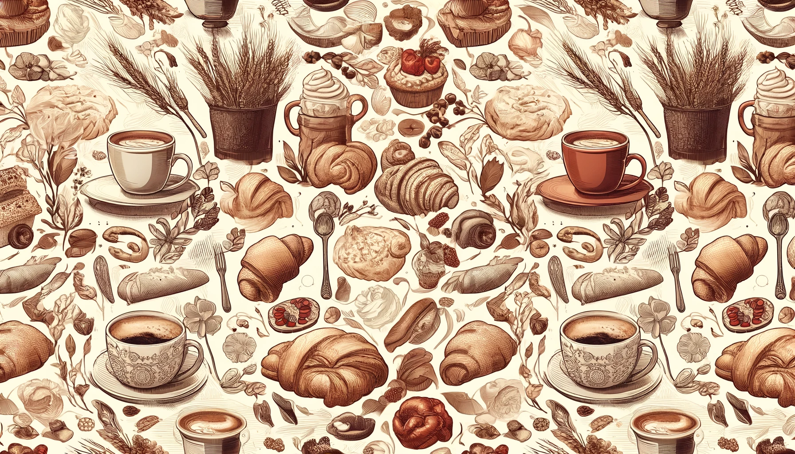
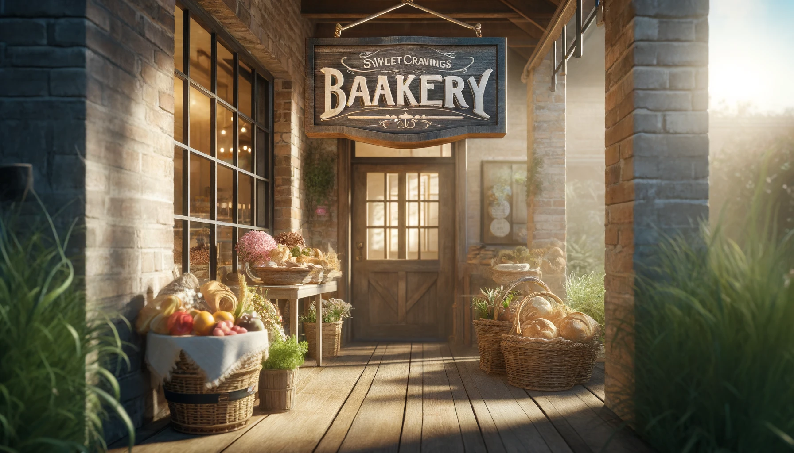
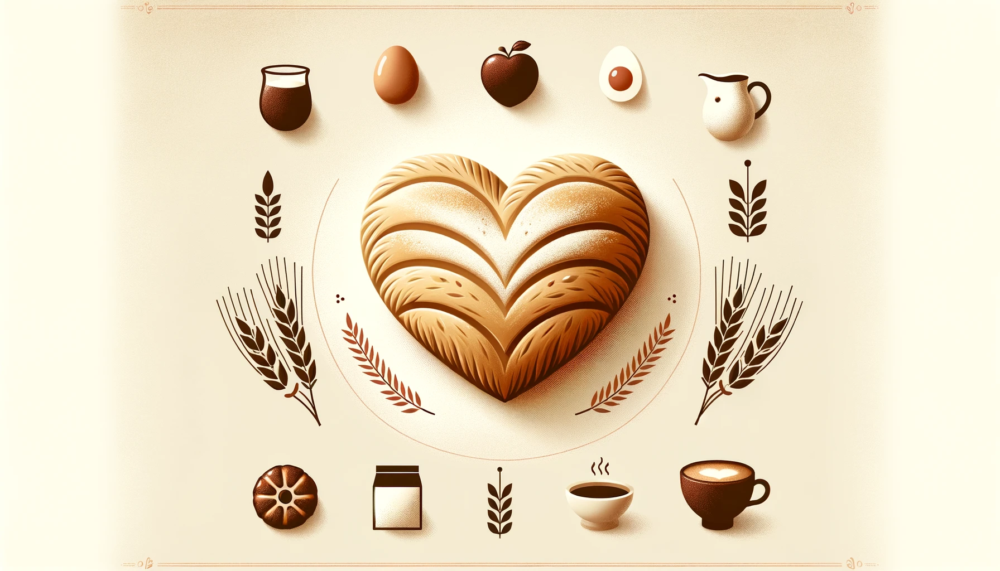
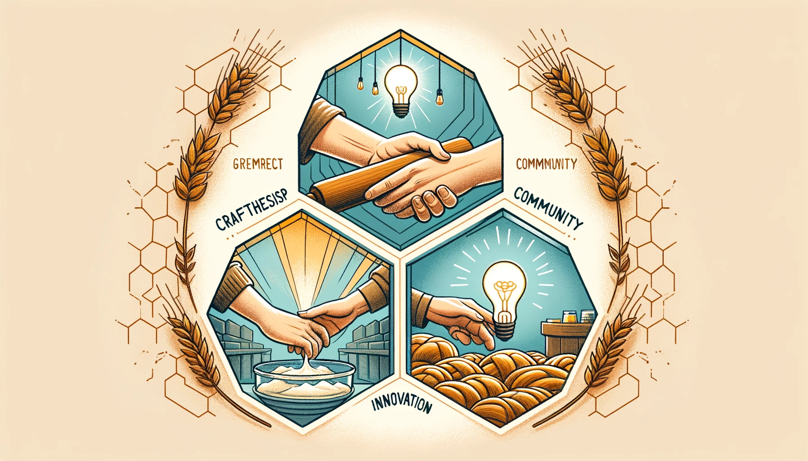
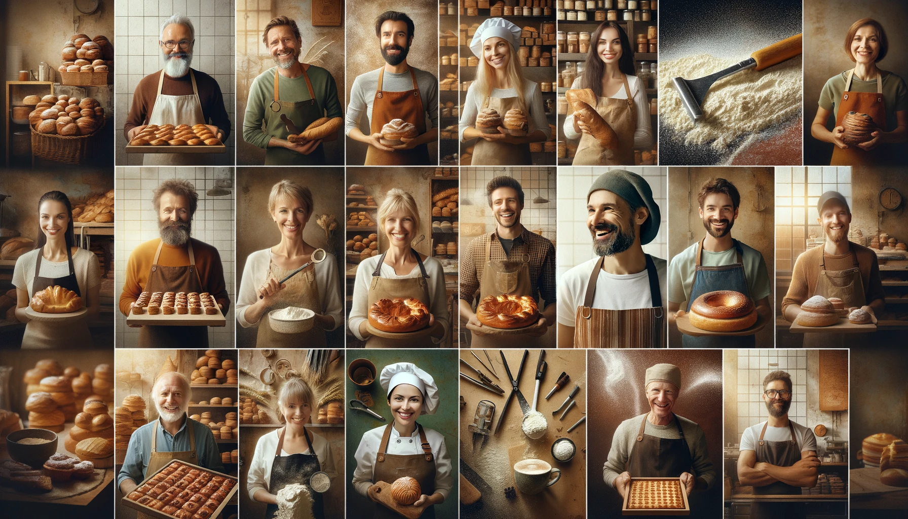
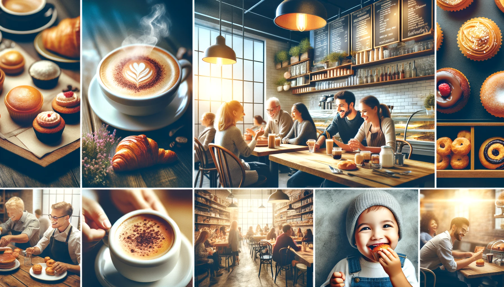
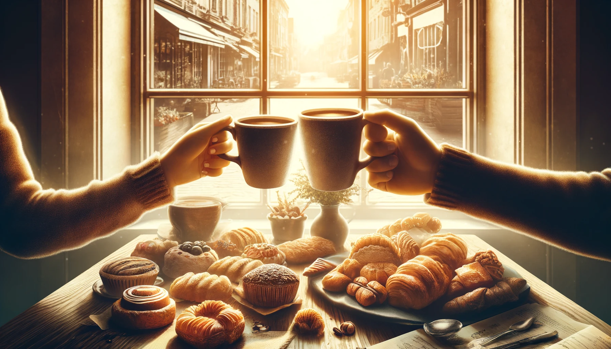

Welcome to Sweet Cravings Bakery

Hello and welcome! We're thrilled to have you here, where the aroma of freshly baked goods fills the air and
every bite tells a story of passion, tradition, and innovation. At Sweet Cravings Bakery, we're not just
baking treats; we're crafting memories, one delightful bite at a time.
Our Mission

At the heart of our bustling kitchen is a simple mission: to create extraordinary pastries that bring joy
and comfort to your everyday moments. We believe in the power of high-quality, locally-sourced ingredients
to transform a simple morning treat into an unforgettable experience.
The Journey of Sweet Cravings
Our story began with a shared dream between two friends, Alex and Jordan, who grew up with a deep love for
baking. Inspired by childhood memories of baking with family and the desire to bring people together through
food, we opened Sweet Cravings Bakery in our quaint hometown. What started as a tiny bakery on a quiet
corner has grown into a beloved community spot, known for its welcoming atmosphere and irresistibly
delicious offerings.
Our Values

Quality and Craftsmanship: Every item on our menu is made with care and precision,
using only the finest
ingredients. From the flakiest croissants to the moistest cakes, our baked goods are a testament to our
dedication to quality.
Community and Sustainability: Sweet Cravings Bakery is more than a business; it's a
part of the community.
We prioritize local suppliers and sustainable practices, aiming to support the environment and economy
of
our beloved town.
Innovation and Creativity:We're constantly experimenting in the kitchen, blending
traditional techniques
with modern flavors. Our menu reflects a diverse range of tastes and includes options for everyone,
regardless of dietary preferences.
Meet the Team

Alex and Jordan, co-founders of Sweet Cravings Bakery, bring a combination of culinary expertise and
business acumen. Alongside them is a team of talented bakers and baristas who share a passion for creating
joyful moments through their craft.
Why Choose Sweet Cravings Bakery?

Our bakery stands out for its commitment to quality, community, and innovation. But don't just take our word
for it—here's what our customers have to say:
"Walking into Sweet Cravings is like a hug from an old friend. Not only are the pastries divine, but the
warmth and friendliness of the staff make every visit special." – Emily R.
"The creativity of the menu always surprises me! I love trying their seasonal specials and have yet to be
disappointed." – Mark T.
Join Us

We invite you to visit Sweet Cravings Bakery, whether to enjoy a quiet moment with a cup of coffee or to
celebrate a special occasion with loved ones. Thank you for your support and for being a part of our
journey. Here's to many more shared moments and sweet cravings satisfied!